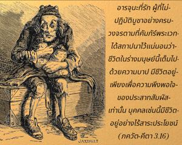

อรฺชุน ที่รัก ผู้ที่ไม่ปฏิบัติบูชาอย่างครบวงจรตามที่คัมภีร์พระเวทได้สถาปนาไว้ ชีวิตในร่างมนุษย์นี้เต็มไปด้วยความบาปอย่างแน่นอน การมีชีวิตอยู่ก็เพียงเพื่อความพึงพอใจของประสาทสัมผัสเท่านั้น บุคคลเช่นนี้มีชีวิตอยู่อย่างไร้ประโยชน์

ปรัชญาละโมบที่ว่า “จงทำงานให้หนักและหาความสุขด้วยการสนองประสาทสัมผัส” องค์ภควานฺทรงตำหนิไว้ ณ ที่นี้ ดังนั้นสำหรับพวกที่ต้องการหาความสุขในโลกวัตถุนี้วงจรแห่งการปฏิบัติ ยชฺญ ที่กล่าวไว้ข้างต้นนั้นเป็นสิ่งจำเป็นอย่างยิ่ง ผู้ที่ไม่ปฏิบัติตามกฎเกณฑ์นี้มีชีวิตอยู่ด้วยความเสี่ยงสูงและจะถูกลงโทษมากยิ่งขึ้นตามกฎแห่งธรรมชาติ ชีวิตมนุษย์มีไว้เพื่อความรู้แจ้งแห่งตนโดยเฉพาะจากหนึ่งในสามวิธีคือ กรฺม-โยค, ชฺญาน-โยค หรือ ภกฺติ-โยค ไม่มีความจำเป็นสำหรับนักทิพย์นิยมผู้อยู่เหนือความดีและความชั่วที่ต้องปฏิบัติตาม ยชฺญ ที่กำหนดไว้อย่างเคร่งครัด แต่สำหรับพวกที่ทำไปเพื่อสนองประสาทสัมผัสของตนเองจำเป็นต้องปฏิบัติ ยชฺญ ตามวงจรที่กล่าวไว้ เพื่อความบริสุทธิ์ซึ่งมีกิจกรรมต่างๆ ผู้ที่ไม่มีกฺฤษฺณจิตสำนึกแน่นอนว่าปฏิบัติตนอยู่ในประสาทสัมผัสจิตสำนึก ฉะนั้นจึงมีความจำเป็นต้องทำงานที่เป็นกุศล ระบบ ยชฺญ ได้วางแผนไว้เพื่อให้บุคคลผู้มีประสาทสัมผัสจิตสำนึกอาจสามารถทำให้ประสาทสัมผัสของตนพึงพอใจได้โดยไม่ต้องถูกพันธนาการอยู่ในผลกรรมจากการสนองประสาทสัมผัส ความเจริญรุ่งเรืองของโลกมิได้ขึ้นอยู่ที่ความพยายามของเรา แต่ขึ้นอยู่กับการบริหารขององค์ภควานฺที่ทรงอยู่เบื้องหลัง ซึ่งมอบหมายให้มวลเทวดาเป็นผู้ปฏิบัติโดยตรง ดังนั้น ยชฺญ จึงมีเป้าหมายไปที่เทวดาโดยเฉพาะดังที่ได้กล่าวไว้ในคัมภีร์พระเวทซึ่งเป็นทางอ้อมในการปฏิบัติกฺฤษฺณจิตสำนึก เพราะว่าเมื่อเราประสบผลสำเร็จในการปฏิบัติ ยชฺญ แล้วเราต้องมาเป็นผู้มีกฺฤษฺณจิตสำนึกอย่างแน่นอน หากหลังจากปฏิบัติ ยชฺญ แล้วเราไม่มีกฺฤษฺณจิตสำนึกถือว่าหลักธรรมนี้เป็นเพียงแค่หลักศีลธรรมเท่านั้น ดังนั้นเราไม่ควรจำกัดความเจริญก้าวหน้าให้มาถึงแค่ระดับศีลธรรมเท่านั้น แต่ควรข้ามพ้นไปให้บรรลุถึงกฺฤษฺณจิตสำนึก